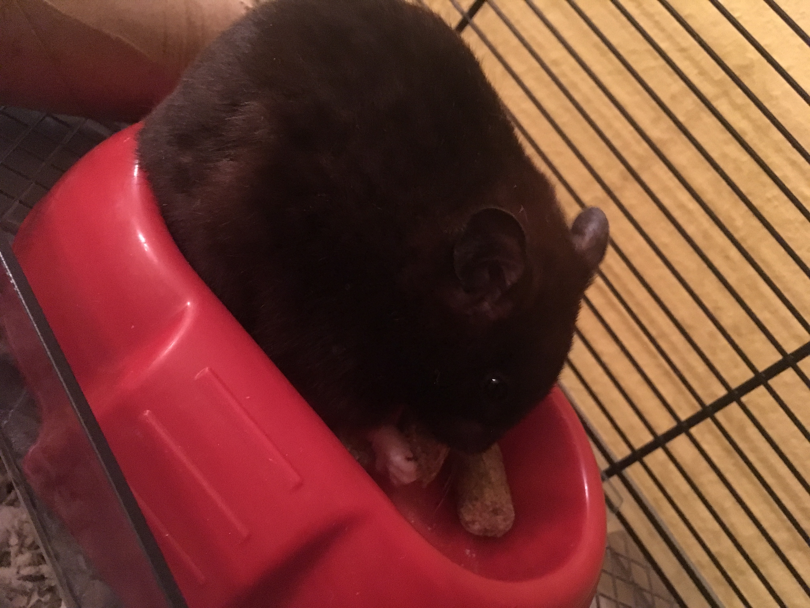

The best person :D
This website is about a person named Maya and her thoughts on things as of 8/23/2021
This is a picture of my hamster, Mr. Hamster. He is pretty important. My brother came up with his name.
I have lived in Houston my whole life. The elementary school I attended was McDougle. I miss being in elementary school where they give you time to play. The time I had to go to middle school was one of the saddest moments of my life. One of my best friends was zoned to go to Klein Intermediate instead of Wunderlich :( Fortunately, I made some new friends at Wunderlich. Most of my current friends were made during middle school. After Wunderlich, I went to Klein Forest where one of my best friends left and another came back. I guess it's going okay.
Some of the clubs/activities I have been in are:
In my free time, I like to:
My mom's name is Leslie.She is 49 years old and works at the bank.
My dad:My dad's name is James. He is turning 53 this year. His job is to check computers.
My brother:My brother's name is Dylan. He is 21 years old, and doesn't have a job right now(as far as I know). He attends UT.
Phone number:1283781293
Maya says hi
check to say hi back